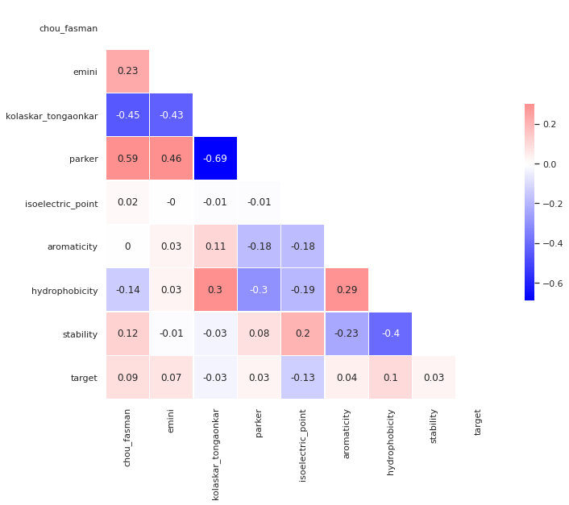

Review
The data we'll be using comes from three seperate datasets with the same features. Each entry in the datasets is a separate epitope, which is a region of the protein shell of a virus. The features of the dataset are an assortment of chemical properties of each epitope. Which virus the epitope is from is precisely the difference between the three datasets: we have a large, labeled general dataset for "B-Cell" epitopes, which refers a collection of many miscellanious viruses. There is a smaller labeled dataset for SARS, which is a virus closely related to COVID-19, and then we have a large but unlabeled dataset for COVID-19. The labels are for "antibody valency"; a valent epitope can be used as a vaccine, while a nonvalent epitope cannot. So, the task is to use the features of each epitope in the labeled datasets to build a model which can predict the antibody valencies for COVID-19 epitopes.
Correlation Matrix Heatmap
TODO Explanation of heatmaps

Data Processing
TODO talk about removing columns and normalizing data
Principal Component Analysis
Recovered Variance
TODO explain plots below


Component Feature Composition
TODO explain meaning of the bar graphs


Scatterplots
TODO explain what these scatterplots show


Clustering Approach
TODO explain meaning of plots

Clustering Evaluation
One simple statistic we can look at to begin evaluating the clustering models is the number of data points in each cluster. This does not imply correctness or incorrectness, but can tell us the sizes of each group.


The clusters' sizes are fairly even between the B-Cell and COVID-19 epitopes, but half of the SARS clusters are much smaller than the others. This is interesting but does not necessarily mean anything. SARS is also the smallest dataset, so the uneven cluster sizes might be caused by that.
We have ground truth labels for the B-Cell and SARS epitopes, so we can compare the total number of valent and nonvalent epitopes in each cluster. With those totals, we can also calculate purity for the clusters: the portion of data points in that cluster which belong to that cluster's most numerous ground truth label.


For the B-Cell clusters, the purities range from about 0.65 to about 0.85. This might seem decent initially because a purity of 1 is a perfect match between clustering assignment and ground truth label. However, every cluster is matching with the same label (nonvalent) and the portion of nonvalent epitopes in the whole B-Cell dataset is about 0.75 (indicated with the red dashed line). That means that the cluster assignments are more or less a random sampling with regard to the ground truth label.

Unlike the B-Cell clusters, there are two clusters in the SARS model which match with the valent ground truth label. One of them even has a purity of 1! Unfortunately, those are also the two smallest clusters, so they aren't very useful for the majority of the data points. Among the remaining clusters, we observe the same trend as the B-Cell data: each cluster has a roughly random sample of valent and nonvalent datapoints. These observations lead us to believe that clustering is insufficent for building the desired model to classify epitopes and that we will need to utilize supervised learning to achieve better results.